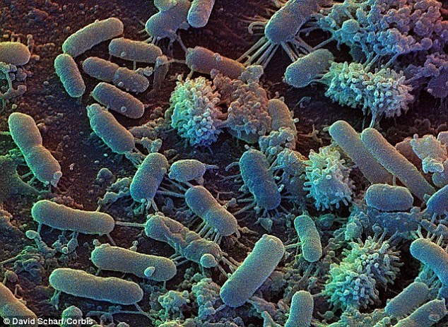
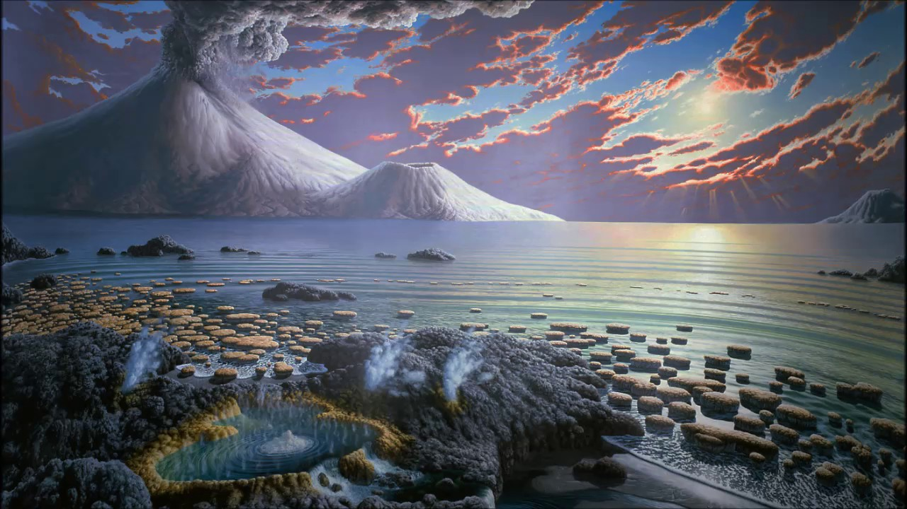
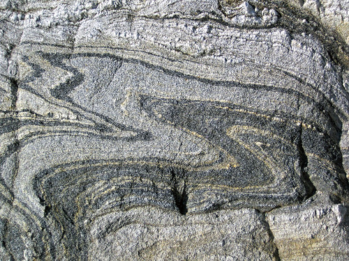
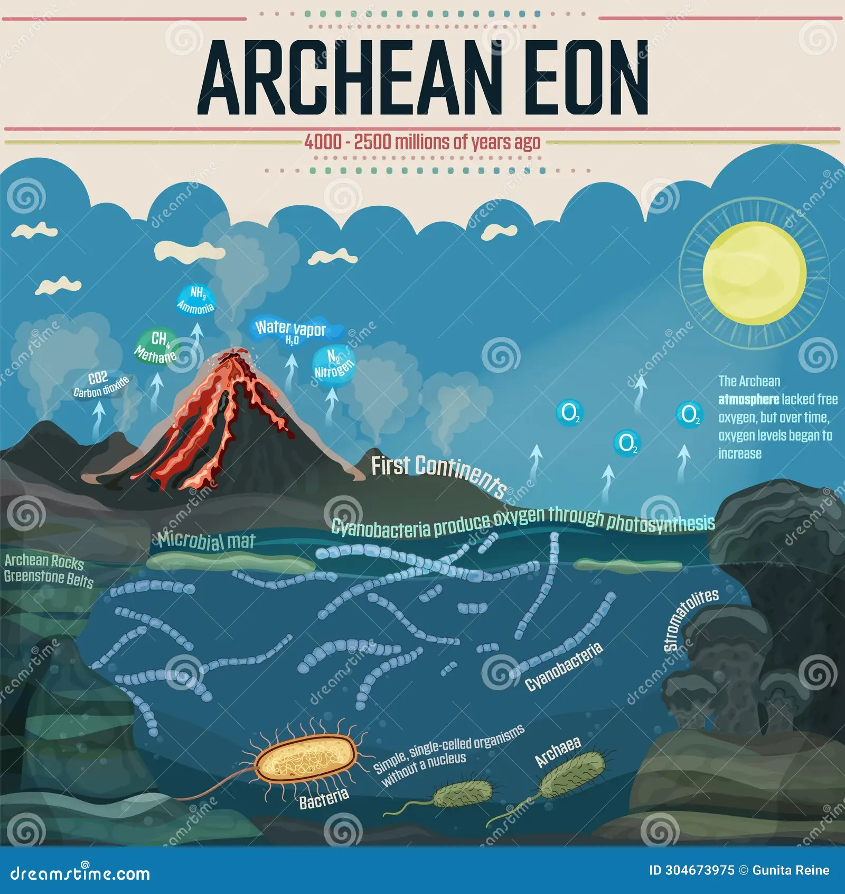
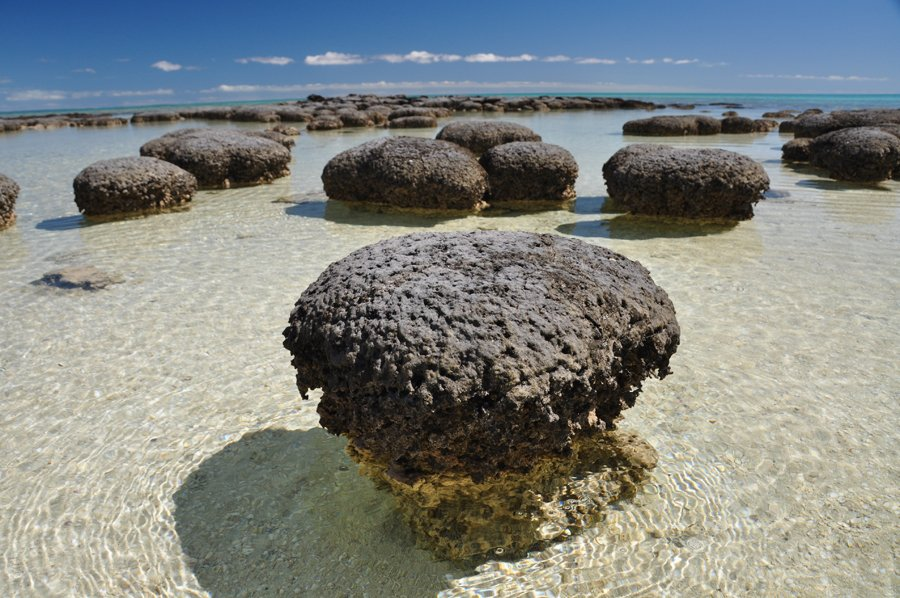

Formation of Continents: During the Archean, the Earth’s crust cooled enough to form stable continents. The first continental landmasses, known as cratons, began to appear.
Atmosphere and Oceans: The atmosphere was primarily composed of methane, ammonia, and other gases, with little to no oxygen. The first oceans formed as the planet cooled.
Emergence of Life: The Archean Eon saw the appearance of the first simple life forms, primarily prokaryotic microorganisms like bacteria and archaea. Stromatolites, layered structures created by microbial communities, are some of the earliest evidence of life.
 Granite-Gneiss Complexes: These are zones of variably metamorphosed volcanic and sedimentary rocks that are found within Archean cratons. They provide important clues about early Earth processes.
Greenstone Belts: These are the dominant rock types of the Archean crust, formed from the cooling and solidification of magma.
Surface Temperature: Likely hotter than today due to higher levels of greenhouse gases.
Sun’s Intensity: The Sun was fainter during the Archean Eon, contributing to different climate conditions.
Greenhouse Gases: High levels of methane and carbon dioxide in the atmosphere.
Prokaryotes: Simple, single-celled organisms without a nucleus, including bacteria and archaea.
Stromatolites: Layered structures formed by the activity of microbial communities, providing some of the earliest evidence of life on Earth.
Understanding Early Earth: The Archean Eon is crucial for understanding the early development of the Earth and the origins of life. The processes and events of this eon set the stage for the more complex life forms that would emerge in the Proterozoic Eon.